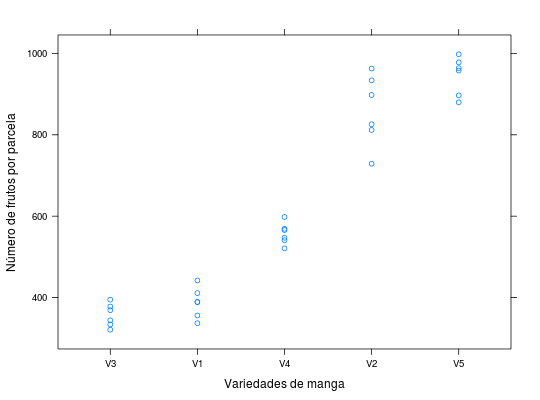

Experimento instalado em delineamento inteiramente casualizado, onde foram estudadas 5 variedades de manga com cada parcela constituída de 3 arvores. Cada variedade teve 6 repetições. Foi avaliada a produção de frutos por parcela.
Um data.frame com 30 observações e 3 variáveis, em que
variedreptfrutBARROS; DIAS (2009), Exercício 4, Cap. 9, pág. 260.
library(lattice) data(DiasEx9.6.4)#> Warning: data set ‘DiasEx9.6.4’ not foundstr(DiasEx9.6.4)#> 'data.frame': 30 obs. of 3 variables: #> $ varied: Factor w/ 5 levels "V1","V2","V3",..: 1 2 3 4 5 1 2 3 4 5 ... #> $ rept : int 1 1 1 1 1 2 2 2 2 2 ... #> $ frut : int 356 729 334 566 998 411 826 369 547 880 ...xtabs(~varied, data = DiasEx9.6.4)#> varied #> V1 V2 V3 V4 V5 #> 6 6 6 6 6unstack(DiasEx9.6.4, frut ~ varied)#> V1 V2 V3 V4 V5 #> 1 356 729 334 566 998 #> 2 411 826 369 547 880 #> 3 389 898 321 598 897 #> 4 337 963 378 521 958 #> 5 442 812 395 541 964 #> 6 389 934 344 569 978xyplot(frut ~ reorder(varied, frut), data = DiasEx9.6.4, xlab = "Variedades de manga", ylab = "Número de frutos por parcela")